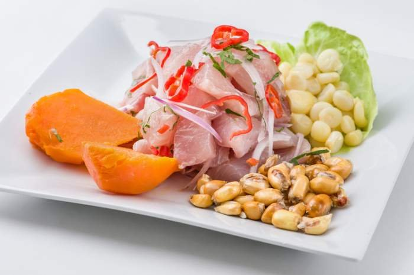

Peruvian Ceviche Recipe

Ceviche is one of the many traditional dishes that Peru has. Peruvian Ceviche is a seafood and the preparation is very unique since the fish cooks with lime and lemon juice. Since, the acid in the citrus juice coagulates the proteins in the fish, effectively cooking it, so it's not heated, and it's served cold or at room temperature. It can be eaten as a main dish or an entree, depending on what is served with it.
Ingredients
- 1 1/2 pounds very fresh and high quality fish fillets
- 1 red onion,finely chopped
- Juice of 4 limes
- 1-2 habanero peppers, cut in half and removed seed and deveined
- Salt
- Coriander and chopped to taste
- Lettuce
- Fresh boiled corn
- Sweet potato
- Lime slices
- Dices or slices hot peppers (optional)
Steps
- Cut the fish into small cubes, place in a glass bowl.
- Cut the red onion in thin slices in cold water and dry it.
- In a large bowl, mix together the fish, red onion, lime juice, salt, habanero pepper (if you use it). Cover and refrigerate for 20 minutes.
- Just before serving, add the coriander. Divide between 4 soup dishes and serve with sweet potato, corn and lettuce leaves to accompany.